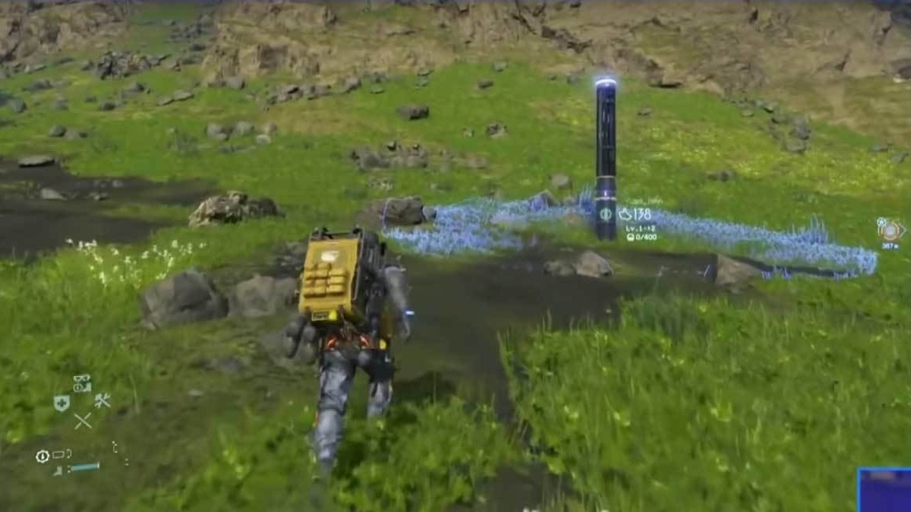

Social Strands: Why a Highly Divisive Game Made Me Care About Strangers

Introduction: The Subtle Power of Human Interaction
It’s time for me to harp again on the necessity of human interaction in video games. This time, though, I’m taking a slightly different approach. It’s one of subtlety and nuance. It’s also quite rare among the usual tools of game design, and I believe it deserves to be more common.
For decades, video games have mostly existed in two worlds. On one hand, there’s the solitary single-player journey and, on the other, the high-energy realm of competitive or cooperative multiplayer. Somewhere in between is something subtler and far more emotionally resonant. The idea of asynchronous multiplayer. It’s a design space where players influence one another’s experiences without ever meeting, trading blows, or sharing lobbies. Many other games feature ghostly bloodstains, cryptic messages, or racing against ghost data, creating subtle ways for players to interact without meeting directly. But none of them have made me feel the emotional power of these invisible connections like Hideo Kojima’s Death Stranding.
Through its “Social Strand System,” Death Stranding turns a desolate, post-apocalyptic America into a quiet, persistent collaboration, a place where being alone doesn’t feel lonely.
Alone Together: Experiencing the Strand
I spent hours trudging across snowy mountains, riverbeds, and crumbling highways, carrying packages so heavy, I probably fell more times than I took steps. Aside from periodic stops at Safe Houses, I believed I was the only person left in the world. Then one day, while toppling down another hill, I saw it. A generator that I didn’t place, humming in the cold. Someone had been there before me. Someone else had struggled, paused, and thought, Maybe the next courier needs this. I had never met them, and I never would, but in that moment, I didn’t feel alone.
It’s the only game I’ve played where feeling indebted actually feels good. You pick up what someone else has left behind, and instead of obligation or competition, there’s gratitude. It’s a quiet, almost spiritual satisfaction. And it changes the way you play. Instead of greedily lopping up all of the resources in the game, you want to leave ladders, bridges, and signs for strangers. Because doing so feels meaningful in itself.
Invisible Kindness, Risk, and the Threads of Connection
Kojima is known for taking risks, defying expectations, bending genres, and building systems that encourage players to act in ways games rarely reward. The Social Strand System is a perfect example. It’s a design choice that could have been seen as niche or alienating, yet it became the heart of the game. In a sense, the mechanics themselves enact a kind of philosophy that feels distinctly Buddhist. Acts of care that ripple outward, often unseen, yet are real in their consequences. Each bridge, generator, or footpath is a quiet lesson in interconnectedness, mindfulness, and compassion.
At the same time, the game deeply resonates with Christian principles. The Golden Rule – treat others as you would like to be treated – is embedded in the experience. You leave something behind not for points or recognition, but because it might help someone else. Someone else may do the same for you. These quiet, reciprocal acts echo the Christian ideal of loving your neighbor and finding meaning in small, thoughtful deeds. Few games reward generosity in a way that feels intuitive and emotionally satisfying. And fewer still invite players to participate in a digital ecosystem that mirrors both Buddhist and Christian ethics as naturally as Death Stranding does.
How the Social Strand System Stands Apart
Other asynchronous systems can be compelling but often remain peripheral. In the Dark Souls series or Elden Ring, ghostly bloodstains replay a stranger’s death, messages offer advice or warnings, and phantom apparitions appear briefly in your world. Nioh 2 lets you summon AI versions of fallen players to fight for loot, while Demon’s Souls subtly shifts world difficulty based on collective player actions. Even Super Mario Run’s Toad Rally uses ghost data for indirect competition.
Death Stranding, by contrast, makes asynchronous interaction central to the experience. Every ladder, bridge, or generator you leave behind is directly usable, sometimes upgraded or repaired by others, sometimes “liked” for encouragement. Lost cargo can be delivered to earn rewards, and signs provide guidance or reassurance to people you’ll never meet. These persistent traces aren’t just information. They’re gestures of care. They feel alive. The system subtly rewards attention and empathy without requiring direct interaction, making every act of kindness a meaningful contribution to a shared digital world.
Why More Games Should Do This
After playing Death Stranding for quite a while, delivering packages across rugged terrain and internally debating the repetition, I’ll admit the game’s core loop isn’t perfect. But the moments of connection stick with me more than any mission victory or boss fight that I’ve encountered in other games. They’ve reframed how I think about multiplayer, not as a space for domination or scorekeeping, but as a place to leave a mark that matters.
Few games encourage empathy, subtle generosity, or invisible cooperation. Most reward efficiency, power, or direct competition. Death Stranding, through Kojima’s bold design choices, proves that a game can make altruism feel natural and deeply rewarding. More games should push players toward small acts that ripple outward, shaping experiences and human connection even without direct communication. This isn’t just design innovation. It’s a gentle lesson in ethics. Games can teach us to care for strangers, honor their struggles, and act in ways that are both mindful and morally meaningful.
Beyond the Game: Reflection and Resonance
What sets Death Stranding apart is how it transforms loneliness into connection. In most games, help is strategic or functional. Here, help is moral, ethical, and emotional. Seeing a ladder in a canyon or a generator at the top of a hill feels like a handshake across time and space. It makes me think not just about the game, but about the unseen efforts and kindnesses in my own life.
Again, Death Stranding’s mechanics echo both Buddhist and Christian principles: mindfulness in noticing paths and objects, karma in small actions rippling outward, and the Golden Rule in leaving something behind for others. All of this is achieved without preaching, but rather, through design, risk, and intention. It invites reflection, empathy, and a recognition of our shared humanity, even in a virtual world.
Conclusion: The Strand That Holds
Death Stranding is more than a game. It’s a meditation on empathy, interdependence, and the ethics of care. Kojima’s willingness to take risks allowed him to encode acts of quiet kindness into the game world, creating a digital ecosystem that rewards generosity and attentiveness. Even when we play alone, even in worlds ravaged by desolation, we’re not truly alone.
I hope more games follow this example. Not every title needs to become a “strand game,” but asynchronous, invisible, altruistic interaction is a fertile ground for game design and human reflection. Small acts, rippling outward, can change how we feel, act, and connect both in games and perhaps, in life. By blending Buddhist mindfulness with Christian ethical reflection, the Social Strand System reminds us that our smallest contributions can resonate far beyond our immediate awareness. And perhaps that’s the most important strand of all.
Page formatted by Written & Formatted. © Tim Samoff.